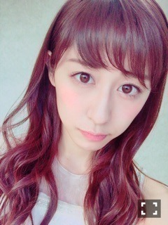
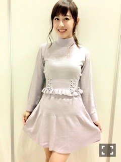

| 2015/11 08 Sun | 斎藤ちはる お待たせしました！ 振り返りです。(´> ∀<｀)ゝ |
ちはるーむへようこそ(｡･o･｡)ﾉ

まず始めに、アンダーライブに
来てくださった皆さん、
応援してくださった皆さん、
本当にありがとうございました！！
今回のアンダーライブは今までとは全く違った雰囲気で臨みました。
盛り上がるか不安だったけど
やっぱりアンダーライブに来る方の熱量が半端なくて(> <)！！
それがメンバー側にも伝わっていい空気感でした(﹡ˆ ˆ﹡)
ユニットコーナーでは、
無表情、ボーダー、魚たちのLOVE SONGを踊りました！
無表情は、かなりんと歌ったので
「ベルバラ姉妹」を結成！！！♡
THE 無表情。
コールが直に伝わってすごい嬉しかったし、
なによりやってて楽しかった(｡･o･｡)ﾉ！
近い距離感だからこそなし得る一体感が素敵でした。
ボーダーは、ゴリゴリの一期生(ひめたん、らりん、あみ、まひろ)の5人でやりました(｢･ω･)｢
ゴリゴリの一期生、メンバー、スタッフさん人気が半端なかったです笑
みんなの想いとかやる気とかが一致して、一体感が踊っていて楽しかった(｡･o･｡)ﾉ
魚たちのLOVE SONGは未央奈、らりん、まひろの4人でやって、一実ポジしました！
ちょうどずーが見に来てくれた日が魚たちの日だったんだ\( ˆoˆ )/
全握とか、全ツの裏でずっと真似して踊ってたから踊れた時嬉しかったなあ♡
武道館、より良いものを見せれるよう
アンダーメンバー全力で創り上げていきたいと思います！！頑張る！！
先週の握手会！！
アンダーライブの話や、
個人PVの話や、
武道館ライブの話などの話をたくさん聞けて
凄く充実した時間でした(﹡ˆ ˆ﹡)
やっぱりたくさんの元気をもらえる。
最高です！！

私服は、Honey Cinnamonの薄紫色のセットアップ(﹡ˆ ˆ﹡)
ここのお洋服、女の子っぽくて程よくシンプルで好きなんだー♡
白の編み上げニットも買ったよ( ◦˙ ˙◦ )
握手会でもたくさん言われたけど、
13th個人PV「夢在る時」が、好評でして...( ;o; )♡
嬉しい限りです。。( ;o; )♡
それもみんな、カワシマ監督さん始め、たくさんの素晴らしいスタッフさんのおかげだと思っています。
本当にありがとうございます。
映像をみても、構成をみても、照明をみても、衣装をみても、エンディングをみても、最高のPVになっていて、自分の演技じゃ物足りなかったのではないかと思うほど...(> <)
演技を褒めていただいたりもしましたが
私はまだ、こうできるなあ、ここはああだったなあ、と反省できる場面が映像を見直すとたくさんありました(> <)
自分に厳しく！評価していきたいと思います。笑
もっと成長したときに、またもう一度カワシマ監督やスタッフさんの皆さんと一緒にお仕事ができるように、私自身も頑張りたいと思います！！
発売後に、カワシマ監督がtwitterで裏話などを話してくださってるのを親に教えてもらいました！
見たらたくさんの事が書かれてあって
嬉しくもあり、恥ずかしくもあり...(｡-_-｡)
カワシマ監督の熱意が物凄く嬉しかったです。！！
見てない皆さんも、個人PVを是非みてください。
自信作です(﹡ˆ ˆ﹡)
調子に乗って、かきあげ前髪に挑戦したときにの写真...(｡-_-｡)
ちょっとは、大人っぽいかな？(｡-_-｡)
女の子らしい女性になると同時に、
自分をしっかり持った、かっこいい女性にもなりたい！！！
両方を持ち合わせた"オトナ・ステキ女子"になれますように( ˶ˇωˇ˶ )！！
お花、スキ。
斎藤ちはる